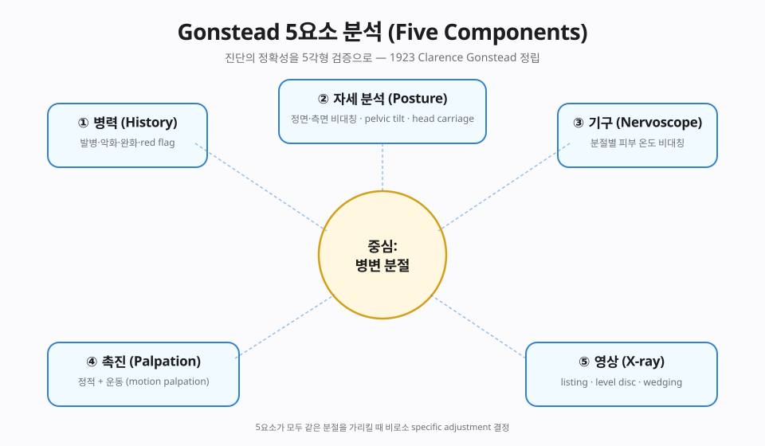
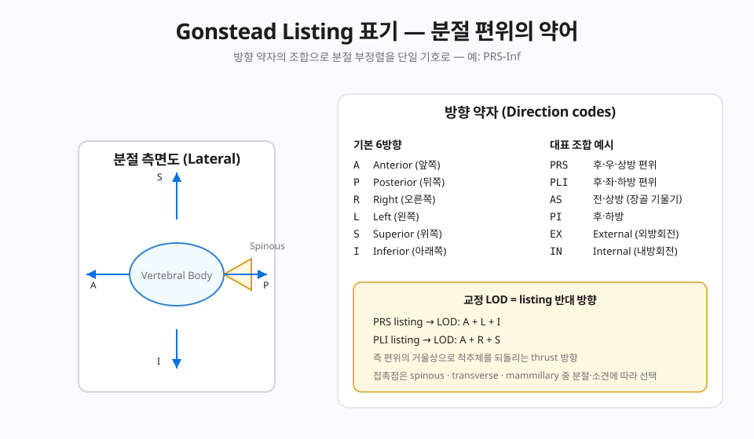
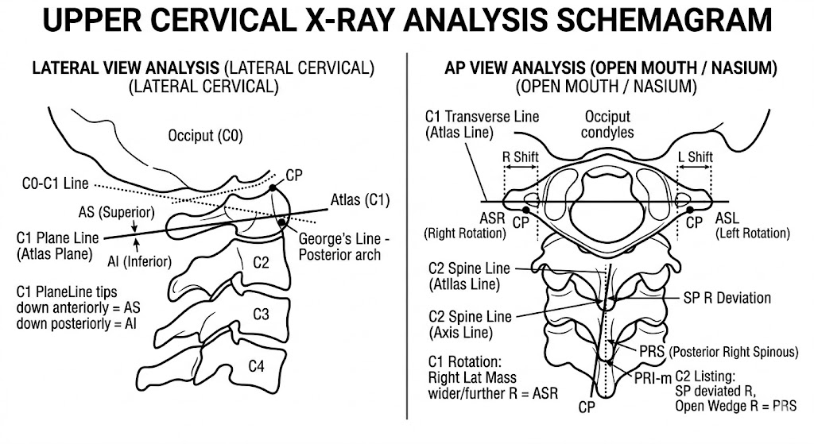
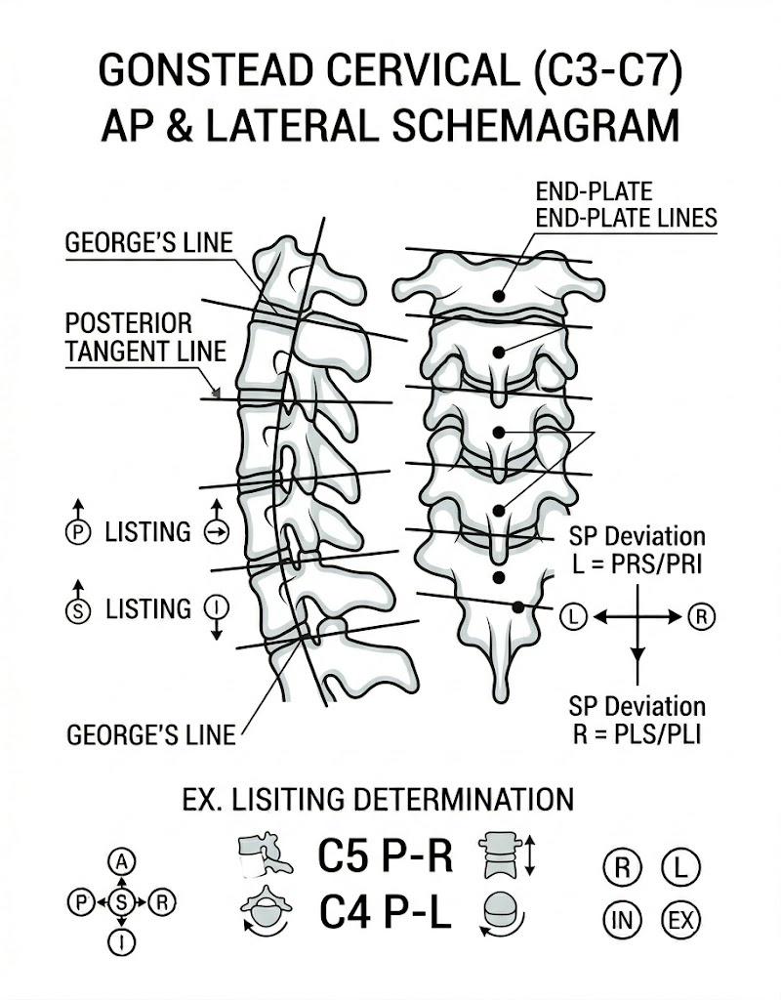
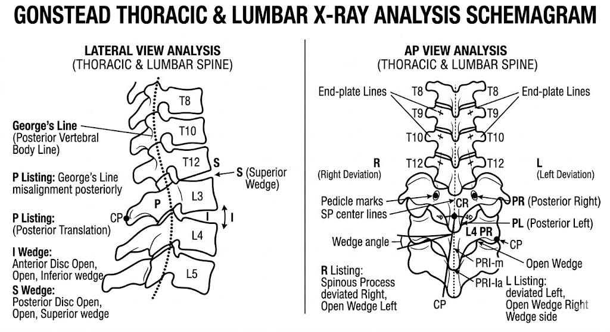

📊 핵심 다이어그램
이 챕터의 핵심 개념을 시각화한 도식.


📘 편집 원칙
근거 기반 의학(EBM) 관점. Vitalism · 전신질환 인과론 · AK 진단 확장 · Cranial rhythm 등 No evidence 주장은 🔴 제외 또는 비판적으로만 언급합니다.
개요
본 챕터가 다루는 기법
Clarence S. Gonstead(1898-1978)가 1923년부터 정립한 특이적 분석 시스템. 골반 foundation + Level Disc Theory + 5 Components(History·Posture·Instrumentation/Nervoscope·Palpation·X-ray) 일치 시에만 교정. Gonstead listing 체계로 변위 특이 기록.
근거 수준 한눈에
근거
🟡 Moderate — 요통·경추통 SMT (Cochrane)
이론·기전
모든 카이로프랙틱 기법은 Afferentation → 중추 처리 → Efferentation 프레임(Chapter 2 참조)에서 해석합니다. 이 기법이 어떤 구심성 입력을 만들고 어떤 원심 출력을 조절하는지.
창시자와 역사적 맥락
Clarence Selmer Gonstead(1898-1978)는 위스콘신 Mount Horeb에서 기계공학을 거쳐 1923년 Palmer School of Chiropractic을 졸업한 임상가입니다. 자동차 산업의 정밀 정렬(precision alignment) 사고방식을 척추 분석에 적용해 Gonstead System을 정립했습니다. Palmer 가문의 'Innate Intelligence' 생기론에서 거리를 두고 X-ray 영상의학·정밀 촉진· 계측 기반의 특이적 분석을 강조했다는 점에서, 1세대 카이로프랙틱과 현대 근거 기반 도수치료(EBM manual therapy) 노선 사이의 가교 역할을 했습니다. 그는 어떤 분절에 자극을 줄지 결정하기 전에 객관적 소견들이 일치해야 한다고 보았고, 이 '5 Components 일치' 원칙은 현대 Diversified의 진단·교정 표준에도 영향을 남겼습니다.
생체역학 — Level Disc Theory와 골반 foundation
Gonstead 시스템의 핵심 가설은 척추는 골반(천골 기저면)을 토대로 적층된 분절 구조이며, 한 분절의 디스크 쐐기화(disc wedging)가 위·아래 분절의 보상 변위를 만든다는 'Level Disc Theory'입니다. 골반 비대칭 → 요천추 변위 → 상위 분절 보상 → 두개경계까지의 운동학적 연쇄를 가정하므로, 분석은 항상 골반에서 시작해 상행합니다. 척추-골반의 정역학·운동학을 강조하는 현대 생체역학 연구(Panjabi의 neutral zone 모델, Bogduk의 분절 기능 분석)와 큰 틀에서 부합합니다. 다만 Gonstead listing이 가정하는 디스크 쐐기 변위의 mm 단위 정량성은 영상의학적 검증이 제한적이므로, 임상 의사결정의 1차 근거가 아닌 보조 지표로 다루는 것을 권장합니다.
신경생리 — Afferentation → Central → Efferentation
Gonstead 특이적 HVLA의 신경학적 효과는 Chapter 2의 Aff/Def/Eff 프레임으로 해석됩니다.
- 🟢 Afferentation (구심성 입력) — 특이적 HVLA는 관절 캡슐의 Type I·II 기계수용기와 근방추 1차 종말(Ia)에 고속·짧은 자극을 가합니다. Pickar(2002)·Reed et al.(2017) 등 전기생리 연구는 분절 도수 자극 후 척수 후각으로의 구심성 발화 변화를 보고합니다.
- 🟡 중추 처리 (Central processing) — 후각 수준의 gate control에 의한 통증 신호 억제, 중뇌 도수관주위회백질(PAG)·연수의 하행성 통증 억제(DNIC) 단기 활성화, 뇌간 망상체를 통한 자율신경 톤 변화가 가설로 제시됩니다(Coronado 2012 SR).
- 🟢 Efferentation (원심성 출력) — α-운동신경 흥분성 변화 (H-reflex 단기 감소; Dishman 2002), 척추주위근 표면 EMG의 일시적 정상화, 통증으로 인한 근방어(guarding) 감소가 보고됩니다.
🟠 효과의 경계
위 신경생리 변화는 분(minute)~시간 단위의 단기 효과로 잘 기록되어 있으나, 장기 임상 결과(통증·기능·재발)와의 직접 인과는 운동·복합치료의 기여를 분리하기 어렵습니다. Gonstead HVLA는 운동·자세·통증 교육과 결합된 다요소 치료의 한 자극 양식으로 위치시키는 것이 적절합니다.
⭐ Gonstead 부위별 진단·교정 프로토콜
Gonstead 임상의 두 축 — Listing(변위 특이 기록)과 Line of Drive(LOD, 교정 방향). 부위마다 필요한 X-ray view, 흔한 listing, 주 증상, 그리고 환자 자세 · 접촉점 · 스태빌라이징 · LOD · 보조 도구까지 단계별로 기술합니다.
🔵 Listing 표기 기본 규칙 (복습)
- 1번 글자 — 시상면 변위 (P = Posterior, A = Anterior)
- 2번 글자 — 수평면 회전 (R = Right, L = Left). 극돌기 방향 = 추체 반대
- 3번 글자(선택) — 관상면 wedge (S = Superior, I = Inferior)
- 천장관절은 별도 체계 — AS / PI / EX / IN
- 교정 벡터(LOD) = listing 반대 방향
📋 전체 Gonstead Listing 체계 — 표기법과 listings 전체 목록
Gonstead listing은 부위에 따라 표기 구조가 다릅니다. 아래 표는 부위별 표기 규칙 · 가능한 listing 조합 전체 · 접촉점 · 표준 자세를 한눈에 보여줍니다. 세부 임상 설명은 아래 region card에서 이어집니다.
① 부위별 표기 구조 요약
| 부위 | 글자 수 | 표기 구조 | 대표 예시 | 필수 X-ray |
|---|---|---|---|---|
| C1 (Atlas) | 2-4글자 | [AS/AI] + [R/L] + (P/A 선택) | ASR · ASLP · AIL | APOM + Lateral Cerv |
| C2-C7 · T1-T12 · L1-L5 | 2-3글자 | P + [R/L] + (S/I 선택) | PR · PLS · PRI | A-P + Lateral 해당 부위 |
| Ilium (장골) | 2-4글자 | [R/L] + [AS/PI] + (EX/IN 선택) | R AS · L PI · R PIEX | A-P Pelvis + Lateral |
| Sacrum | 2-4글자 | P + [R/L] + (/I 선택, apex 방향) | Base P-R · P-L/I | A-P Pelvis + Ferguson |
| Coccyx | 1-3글자 | A + (R/L 선택) | A · A-R · A-L | Lateral Coccyx |
② Atlas (C1) — 가능한 listings 전체 8가지 (+확장 8가지)
| 기본 listing | 의미 | + P(Posterior 회전) 조합 | + A(Anterior 회전) 조합 |
|---|---|---|---|
| ASR | Anterior-Superior Right | ASRP | ASRA |
| ASL | Anterior-Superior Left | ASLP | ASLA |
| AIR | Anterior-Inferior Right | AIRP | AIRA |
| AIL | Anterior-Inferior Left | AILP | AILA |
| S = 편위 측이 Superior / I = Inferior · R = Right laterality / L = Left laterality | |||
표기 해석: ASLP = Anterior(전방) + Superior(상방) + Left(좌측 laterality) + Posterior(후방 회전 동반).
Atlas는 occipito-atlantal 관절 특수성 때문에 6면 운동(상/하·좌/우·전/후) 조합이 모두 가능.

⚠ Schemagram은 분석 원리 학습용. 실제 임상 listing은 5 Components(History · Observation · Instrumentation · Palpation · X-ray) 일치 시에만 결정.
③ 일반 척추 (C2-C7, T1-T12, L1-L5) — 6가지 listings (×24 분절)
| Listing | 구성 | 극돌기 위치 | 추체 회전 | 관상면 wedge | LOD |
|---|---|---|---|---|---|
| PR | Post + Right | 후방·우측 | 좌측 회전 | — | A + Left |
| PL | Post + Left | 후방·좌측 | 우측 회전 | — | A + Right |
| PRS | Post + Right + Sup wedge | 후방·우측 | 좌측 회전 | 우측 상방 open | A + Left + Inferior |
| PRI | Post + Right + Inf wedge | 후방·우측 | 좌측 회전 | 우측 하방 open | A + Left + Superior |
| PLS | Post + Left + Sup wedge | 후방·좌측 | 우측 회전 | 좌측 상방 open | A + Right + Inferior |
| PLI | Post + Left + Inf wedge | 후방·좌측 | 우측 회전 | 좌측 하방 open | A + Right + Superior |
적용 분절: C2 · C3 · C4 · C5 · C6 · C7 · T1-T12 · L1-L5 — 총 24개 분절 × 6 listings = 144가지 이론적 listing 조합.

C5 P-R는 SP가 우측으로 편위된 후방 listing.

L2 PI-R · L1 PRI-m은 단일 추체에서 wedge magnitude(m = minor)까지 표기한 임상식 기록.
④ Ilium (장골) — 8가지 + flare modifiers
| Listing | 구성 | 장골 회전 | 접촉점 | LOD |
|---|---|---|---|---|
| R AS | Right + Anterior-Superior | 우측 전·상방 회전 | 우측 PSIS | Posterior + Inferior |
| L AS | Left + Anterior-Superior | 좌측 전·상방 회전 | 좌측 PSIS | Posterior + Inferior |
| R PI | Right + Posterior-Inferior | 우측 후·하방 회전 | 우측 ischial tuberosity | Anterior + Superior |
| L PI | Left + Posterior-Inferior | 좌측 후·하방 회전 | 좌측 ischial tuberosity | Anterior + Superior |
| R AS-EX | R AS + External flare | AS + 외측 벌어짐 | PSIS + ASIS 외측 | P + I + Medial |
| R AS-IN | R AS + Internal flare | AS + 내측 수렴 | PSIS + ilium outer | P + I + Lateral |
| R PIEX | R PI + External flare | PI + 외측 벌어짐 | Ischial tuberosity + 외측 | A + S + Medial |
| R PI-IN | R PI + Internal flare | PI + 내측 수렴 | Ischial tuberosity + 내측 | A + S + Lateral |
| 좌측(L)도 동일 8가지 · 합 16 listings. EX/IN은 obturator foramen 모양과 ilium wing spread로 진단. | ||||
⑤ Sacrum — Base 편위 기준
| Listing | 의미 | Ferguson 소견 | LOD |
|---|---|---|---|
| Base P | Sacral base 후방 (양측 대칭) | Base angle 증가 (hyperlordosis) | Anterior · 전방 thrust |
| Base P-R | Base 우측 후방 | 우측 SI 간극 상부 좁음 | Anterior + Left |
| Base P-L | Base 좌측 후방 | 좌측 SI 간극 상부 좁음 | Anterior + Right |
| Base P-R/I | Base 우측 후방 + apex 하방 편위 | 우측 SI 좁음 상부 + 천골 우측 edge 하강 | A + L + Superior |
| Base P-L/I | Base 좌측 후방 + apex 하방 | 좌측 SI 좁음 상부 + 좌측 edge 하강 | A + R + Superior |

L4 PRS). Pelvic grid는 ① S2 Vertical Reference Line(중앙 종축) ② Femoral Head Level Line(대퇴골두 수평선) ③ 좌·우 Iliac Width(Innominate line)를 그린 뒤, iliac width가 좁으면 IN(Internal flare), 넓으면 EX(External flare)로 판정. Sacrum 양측에 IN/EX, 좌골 결절 부위에 AS/PI를 표기 — 4-listing(AS · PI · IN · EX) 조합으로 innominate 변위를 기록한다.
📐 분석 순서(권장): ① Femoral head level → ② S2 vertical reference → ③ Iliac width(IN/EX) → ④ AS/PI(좌골 결절 높이) → ⑤ L5 → ⑥ 상위 요추. Foundation부터 위로 올라가며 보정.
⑥ Coccyx (미골) — Anterior 변위 위주
| Listing | 의미 | 임상적 상관 | LOD |
|---|---|---|---|
| A | Anterior (정중 전방 편위) | 출산 후 · 낙상 후 coccyx pain | Posterior 견인 |
| A-R | Anterior + Right | 우측 기립근·항문거근 경련 | P + Left |
| A-L | Anterior + Left | 좌측 동일 | P + Right |
| ⚠ Coccyx 교정은 intra-rectal(직장 내) 접근이 원칙 → 환자 동의·장갑·윤활·신뢰 관계 필수. 한국 임상에서는 외부 approach도 사용. | |||
⑦ 총 listing 조합 개수 정리
📊 이론적 Gonstead listings 총 개수
- C1 Atlas: 4 기본 + 8 확장 = 12
- C2-L5 (24 분절 × 6 listings): 144
- Ilium (R/L × 8 types): 16
- Sacrum (base listings): 5 주요 + 변형 다수
- Coccyx: 3 주요
- 합계 ≈ 180+ 이론적 조합 — 실제 임상에서 흔한 것은 30-40개 listing
⑧ 표기 읽기 예시
| 기록 | 해석 | Line of Drive |
|---|---|---|
C1 ASRP | C1이 전방·상방·우측 편위 + 후방 회전 | Posterior + Inferior + Left + Anterior rotation |
C5 PLI | C5 극돌기 후·좌 + 좌측 하부 wedge | Anterior + Right + Superior |
T8 PRS | T8 극돌기 후·우 + 우측 상부 wedge | Anterior + Left + Inferior |
L5 PLI | L5 극돌기 후·좌 + 좌측 하부 wedge | Anterior + Right + Superior |
R AS-EX Ilium | 우측 장골 전·상 + 외측 flare | Posterior + Inferior + Medial |
Sacrum Base P-L/I | Sacral base 좌측 후방 + apex 좌측 하강 | Anterior + Right + Superior |
Coccyx A-R | 미골 전방 + 우측 편위 | Posterior + Left |
📝 Listing 결정은 단독 X-ray로 하지 않는다 (Gonstead 원칙)
5 Components 일치 원칙: History · Observation · Instrumentation (Nervoscope) · Static/Motion Palpation · X-ray — 5가지 소견이 일치할 때에만 해당 분절을 교정. X-ray 단독 listing 결정은 Gonstead 철학에서도 🔴 금지.
- 실제 임상에서는 Palpation이 X-ray보다 우선 (Gonstead 원전 원칙)
- X-ray는 확인(confirmation) 도구이지 진단의 유일한 근거 아님
- Listing 결정 후 즉시 교정 금지 — Instrumentation으로 열·자율신경 비대칭 확인 필수
① Atlas & 상부경추 (Occiput · C1 · C2)
가장 섬세한 부위. Palmer/Gonstead 전통에서 "upper cervical specifics"로 분류 · 추력 강도 최소 · 정확도 최고 요구.
📸 필수 X-ray View
- APOM (Anterior-Posterior Open Mouth) — C1 laterality·Dens 중심 정렬 평가
- Lateral Cervical (neutral) — Atlas plane line·George's line·ADI 측정
- A-P Lower Cervical — C2 spinous·lamina 회전 평가
- Davis Series(flexion/extension lateral) — 선택적 · 불안정성 의심 시
Dens 중심축으로부터 C1 우측 transverse process가 위로 들림 · 우측 atlantodental 간극 좁음 · 좌측 넓음
Listing: ASR (Atlas Superior Right)
C1이 우측으로 편위(laterality) + 상방 wedge. 우측 transverse process가 기준선보다 위로 올라간 상태.
🛏 환자 자세
환자 측와위(좌측 아래) — Gonstead 전용 cervical chair 또는 hi-lo table에서 prone.
머리는 약간 좌측 회전 + 측굴로 우측 TP 노출.
👆 접촉점 (Contact Point)
검사자 우측 index MCP(2번째 손가락 뿌리 관절) 또는 pisiform —
환자 우측 C1 transverse process(mastoid 직하 1cm, 후이개 하방).
✋ 스태빌라이징 핸드
검사자 좌측 손으로 환자 좌측 두정측 두개골 지지 — 반대쪽으로 머리 굴림 방지.
ASR의 반대 — Medial + Inferior 방향.
정확히는 "환자 반대측 턱끝을 향해 약 45°, 아래 방향"으로 short HVLA thrust.
- 🛠 보조 도구
- Gonstead Cervical Chair 또는 Hi-Lo Table · 일부는 toggle board 사용 (HIO 변형)
- ⚡ Thrust 특성
- 100-120ms · 진폭 1-2mm · 최저 강도 (약 100-200N)
- 🚨 금기
- VBI 증상·RA·Down syndrome·급성 경추 외상·동맥 박리 의심
C1 좌측 TP가 Dens 하방으로 처짐 · 좌측 atlantodental 간극 넓음 · 좌측 occipital condyle과 C1 간극 좁음
Listing: AIL (Atlas Inferior Left)
C1 좌측 TP가 하방으로 편위. ASR의 거울상은 ASL, AIR은 AIL의 거울상.
🛏 환자 자세
환자 우측 측와위 (반대측 기준). 머리 약간 우측 회전.
👆 접촉점
검사자 좌측 index → 환자 좌측 C1 TP. 접촉시 표면에 수직 성분 + 약간 외측 성분.
✋ 스태빌라이징 핸드
우측 손으로 환자 반대측 두개골·하악 지지.
AIL 반대 — Medial + Superior. 환자 반대측 턱·이마 방향으로 위쪽 비스듬히 thrust.
- 🛠 보조 도구
- Hi-Lo Table with cervical drop · Cervical chair
- ⚡ Thrust
- 100-120ms · 1-2mm · 100-200N
- 🚨 금기
- ASR과 동일
C2 극돌기가 좌측으로 편위 · 좌측 lamina가 후방으로 더 돌출 · 우측 articular pillar 높이 증가
Listing: C2 PLS (Posterior-Left-Superior)
C2(axis) 극돌기가 후방 + 좌측 회전 + 상방 wedge. Body는 우측 회전 + 우측 측굴된 상태.
🛏 환자 자세
환자 앉은 자세 (Cervical chair) 또는 hi-lo prone. 머리 중립 또는 약 5° 좌측 회전.
👆 접촉점
검사자 우측 thumb 또는 index PIP → 환자 좌측 C2 lamina/articular pillar.
✋ 스태빌라이징 핸드
좌측 손 — 환자 우측 두정·하악 지지 + 약간 우측 측굴 조절 (pre-tension).
PLS 반대 — Anterior + Right + Inferior. 환자 반대쪽 어깨·하방을 향해 45°.
- 🛠 보조 도구
- Gonstead Cervical Chair · Cervical drop-piece
- ⚡ Thrust
- 100-150ms · 1-2mm · 150-300N
- 🚨 금기
- VBI · 경추 불안정성 · 디스크 herniation c radiculopathy
🎓 학습 자료 — 시연 영상 · 3D 해부
② 하부경추 (C3 · C4 · C5 · C6 · C7)
수근·상지 방사통·두통의 주요 근원. Articular pillar 접촉이 표준.
📸 필수 X-ray View
- A-P Lower Cervical(Davis) — 극돌기 laterality · lamina 회전
- Lateral Cervical(neutral, flexion, extension) — disc wedge · 전만각(lordosis) · ADI
- Oblique (Both) — IVF patency · uncinate joint
- Cervical Motion Study(선택) — 분절 hypermobility/hypomobility
C5 극돌기 좌측 편위 · 좌측 disc space 하부 좁음 · 좌측 uncinate process 변성 동반 흔함
Listing: C5 PLI (Posterior-Left-Inferior)
C5 극돌기가 후방 좌측 + 좌측 하부 disc 쐐기 열림. Body는 우측 회전 + 좌측 측굴된 상태.
🛏 환자 자세
환자 앉은 자세 (Cervical Chair). 머리 중립.
👆 접촉점
검사자 우측 index PIP 또는 thumb → 환자 좌측 C5 articular pillar (lamina-articular process 연접부).
✋ 스태빌라이징 핸드
좌측 손 → 환자 우측 두정·광대 지지. Pre-tension에서 미세 측굴/회전 조절.
PLI 반대 — Anterior + Right + Superior. 환자 반대측 눈·상방 방향.
- 🛠 보조 도구
- Gonstead Cervical Chair · toggle board 선택
- ⚡ Thrust
- 120-150ms · 2-3mm · 200-400N
- 🚨 금기
- 심한 경추 radiculopathy · 디스크 추출 · VBI
C7 극돌기 우측 편위 · body는 좌측 회전 · 좌측 articular pillar 후방 돌출
Listing: C7 PR (Posterior-Right)
Cervico-thoracic junction의 흔한 변위. 극돌기 후방 + 우측 편위. Body 좌측 회전.
🛏 환자 자세
Prone on Hi-Lo Table. 머리 turn toward right (환측 쪽으로 회전).
👆 접촉점
검사자 좌측 pisiform → 환자 우측 C7 articular pillar.
✋ 스태빌라이징 핸드
우측 손 — 환자 좌측 승모근 위 압력.
PR 반대 — Anterior + Left. 환자 반대편 액와 방향으로 직하방 압박 후 short thrust.
- 🛠 보조 도구
- Hi-Lo Table · Thoracic drop piece 활용 가능
- ⚡ Thrust
- 150ms · 2-3mm · 300-500N
🎓 학습 자료 — 시연 영상 · 3D 해부
③ 상부흉추 (T1 - T6)
늑골·어깨 영향 · 견갑골 내측연 통증의 주 근원. Transverse process 접촉이 핵심.
📸 필수 X-ray View
- A-P Upper Thoracic — 극돌기·늑골 회전 평가
- Lateral Upper Thoracic — kyphosis 각도·disc wedge
- Swimmer's View(선택) — T1-T3 상부를 쇄골 간섭 없이
- 전장(full spine) A-P — 상·하부 척추 전체 pattern (Gonstead 전통)
T3 극돌기 우측 편위 · 우측 TP 상방 · 우측 늑골 후방 돌출 (rib head 회전)
Listing: T3 PRS (Posterior-Right-Superior)
T3 극돌기 후방·우측 + 우측 상부 disc wedge 열림. 흔히 첫번째 늑골(1st rib) 제한 동반.
🛏 환자 자세
Prone on Hi-Lo Table · 양팔을 side/bench 밑으로 내리거나 cross-arm.
👆 접촉점
검사자 좌측 pisiform → 환자 T3 우측 TP(극돌기에서 외측 2cm).
✋ 스태빌라이징 핸드
우측 손 — 환자 좌측 T3 TP 위 cross-bilateral 지지, 반동 제한.
PRS 반대 — Anterior + Left + Inferior. 환자 반대측 엉덩이 방향 약 35°.
- 🛠 보조 도구
- Hi-Lo Table (thoracic drop piece) · 쐐기 쿠션
- ⚡ Thrust
- 150ms · 2-4mm · 400-600N
🎓 학습 자료 — 시연 영상 · 3D 해부
④ 하부흉추 & 요추 (T7 - L5)
Side posture가 표준 자세. Mamillary process(요추) / TP(흉추) 접촉. Gonstead의 시그니처 영역.
📸 필수 X-ray View
- A-P Lumbar (14×17) — femur heads 반드시 포함 (pelvis 참조 필수)
- Lateral Lumbar — disc wedge · spondylolisthesis · L5-S1 각도
- Oblique Lumbar (R & L) — pars interarticularis (spondylolysis 배제)
- Ferguson Sacral View(선택) — sacral base angle 정밀 측정
Listing: L5 PLI (Posterior-Left-Inferior)
요추 이환 중 가장 흔한 listing 중 하나. L5 극돌기가 후·좌측 + 좌측 하부 disc 쐐기가 열림 = 좌측 facet 압박 + L5 nerve root 자극 가능.
🛏 환자 자세
Right side posture (환측 위) — 환자 오른측 측와위 · 왼쪽 다리 굴곡 · 오른쪽 다리 신전 · 오른팔 견인선.
👆 접촉점
검사자 우측 pisiform → 환자 L5 좌측 mamillary process(극돌기에서 외측 1.5cm, 상후방 1cm).
✋ 스태빌라이징 핸드
좌측 손·팔뚝으로 환자 왼쪽 어깨 지지 — pre-tension에서 체간 rotation과 lateral flexion 조정.
PLI 반대 — Anterior + Right + Superior. 환자 반대측(아래쪽) 어깨 방향으로 45° + 위쪽 성분.
- 🛠 보조 도구
- Gonstead Pelvic Bench (side posture 전용) · 쿠션 pelvic roll
- ⚡ Thrust
- 100-150ms · 2-4mm · 400-800N (부위 따라)
- 🚨 금기
- 급성 디스크 extrusion · cauda equina 증상 · 심한 spondylolisthesis(II도 이상)
L3 극돌기 우측 편위 · body 좌측 회전 · 좌측 mamillary 후방 돌출
Listing: L3 PR (Posterior-Right)
중위 요추의 2-letter listing. Body 좌측 회전. Wedge 없음.
🛏 환자 자세
Left side posture (환측 위 = 우측 위, 아래 좌측).
👆 접촉점
검사자 좌측 pisiform → 환자 L3 우측 mamillary.
✋ 스태빌라이징 핸드
우측 팔 — 환자 오른쪽 어깨 지지.
PR 반대 — Anterior + Left. 환자 반대측 어깨 방향으로 90° 반대.
- 🛠 보조 도구
- Pelvic Bench · Lumbar roll
- ⚡ Thrust
- 120ms · 2-3mm · 400-600N
Listing: T10 PLS (Posterior-Left-Superior)
하부 흉추의 흔한 listing. Body 우측 회전 + 우측 측굴.
🛏 환자 자세
Right side posture 또는 Prone on Hi-Lo(thoracic drop 활용 시).
👆 접촉점
Side posture: 우측 pisiform → 좌측 T10 TP/mamillary. Prone: 좌측 pisiform → 우측 TP cross-contact.
PLS 반대 — Anterior + Right + Inferior.
- 🛠 보조 도구
- Hi-Lo Table (thoracic drop) or Pelvic Bench (side posture)
- ⚡ Thrust
- 120ms · 3mm · 400-700N
🎓 학습 자료 — 시연 영상 · 3D 해부
⑤ 골반 (Ilium) & 천골 (Sacrum)
Gonstead의 Foundation 원칙 — 골반이 모든 척추 보상의 시작점. 반드시 첫 번째로 분석·교정.
📸 필수 X-ray View
- A-P Pelvis(14×17) — iliac crest high·PSIS·ischial tuberosity 비교
- A-P Full Spine — 골반 위 spine 전체 (Gonstead 표준)
- Lateral Lumbopelvic — sacral base angle(Ferguson's angle)
- Sacral A-P (Ferguson) — sacral base listing 정밀
Listing: Right AS Ilium (Anterior-Superior)
우측 장골이 천골에 대해 전방 회전 + 상방 편위. 동측 하지가 functionally longer(~1-2cm). Gonstead에서 가장 자주 만나는 pelvic listing.
🛏 환자 자세
Left side posture (환측 위 = 우측 위) · 아래 다리 신전 · 위 다리 굴곡 90°.
👆 접촉점
검사자 우측 pisiform → 환자 우측 PSIS(Posterior Superior Iliac Spine) 또는 우측 ischial tuberosity (PI 보정 시).
✋ 스태빌라이징 핸드
좌측 팔뚝으로 환자 우측 어깨 지지 · 체간 rotation lock.
AS 반대 — Posterior + Inferior. PSIS를 아래·뒤로 밀어 ilium posterior-rotation 유도.
정확한 각도: 환자 몸 긴축에 대해 ~30° 아래·후방.
- 🛠 보조 도구
- Gonstead Pelvic Bench(필수) · 환자 아래 다리 cradle
- ⚡ Thrust
- 100-150ms · 3-5mm · 500-1000N (Gonstead 영역 중 가장 큰 force)
- 🚨 금기
- 임신 20주 이상 · 골다공증 severe · 고관절 치환술 < 3개월 · SI joint 감염
좌측 iliac crest가 낮음 · 좌측 PSIS가 반대측보다 아래·후방 · 좌측 SI 간극 하부 좁음
Listing: Left PI Ilium (Posterior-Inferior)
AS의 거울상. 좌측 장골이 후방 회전 + 하방 편위. 동측 하지가 functionally shorter.
🛏 환자 자세
Right side posture (환측 위 = 좌측 위).
👆 접촉점
검사자 좌측 pisiform → 환자 좌측 ischial tuberosity (하방 편위 교정) 또는 좌측 lower PSIS.
✋ 스태빌라이징 핸드
우측 팔로 환자 좌측 어깨 지지.
PI 반대 — Anterior + Superior. Ischial tuberosity를 전상방으로 밀어 ilium anterior-rotation + superior-lift 유도.
- 🛠 보조 도구
- Gonstead Pelvic Bench
- ⚡ Thrust
- 120-150ms · 3-5mm · 500-900N
- 🚨 금기
- 임신 후기 · 디스크 extrusion + 좌측 하지 운동 결손
Sacral base가 좌측 상부 후방 · Ferguson's angle 증가 · 좌측 L5-S1 disc 우측 wedge
Listing: Sacrum Base P-L (Base Posterior-Left)
Sacral base(S1 위면)가 좌측 상부가 후방으로 회전 · Ferguson's angle 증가.
🛏 환자 자세
Prone on Hi-Lo Table 또는 Right side posture. 골반 아래 쐐기 쿠션.
👆 접촉점
검사자 우측 pisiform → 환자 좌측 sacral base(S1 level, PSIS 내측).
✋ 스태빌라이징 핸드
좌측 팔로 환자 상체·어깨 지지 (prone) 또는 cross-arm side posture.
Base P-L 반대 — Anterior + Right. Base를 전방·우측으로 돌려 sacrum rotation 교정.
Thrust 직전 sacrum을 slight flexion으로 pre-loading.
- 🛠 보조 도구
- Hi-Lo Table (Pelvic drop piece) · Sacral wedge
- ⚡ Thrust
- 120ms · 3-5mm · 500-800N
- 🚨 금기
- 임신 · sacroiliitis · sacral fx · AS (ankylosing spondylitis)
우측 ilium 후하방 + 외측 벌어짐(EX) · 좌측 대비 장골 wings spread · obturator foramen 좁음 동측
Listing: Right PIEX (Posterior-Inferior-External)
PI(후·하) + EX(External flare — ilium wing이 외측으로 벌어짐) 복합 listing. 보통 만성 요통·천장통에서 보임.
🛏 환자 자세
Left side posture (우측 위).
👆 접촉점
우측 pisiform → 우측 ischial tuberosity + slight medial 성분.
✋ 스태빌라이징 핸드
좌측 팔로 우측 어깨 지지.
PIEX 반대 — Anterior + Superior + Medial. 전·상·내측 3 vector 복합.
- 🛠 보조 도구
- Pelvic Bench · ischial tuberosity 정확 접촉이 중요
- ⚡ Thrust
- 150ms · 4-5mm · 600-1000N
🎓 학습 자료 — 시연 영상 · 3D 해부
🗂 전체 부위별 핵심 요약
| 부위 | 핵심 X-ray | 흔한 Listing | 표준 자세 | 접촉점 | LOD 원리 |
|---|---|---|---|---|---|
| Atlas/상부경추 | APOM + Lateral Cerv | ASR · AIL · C2 PLS | Cervical Chair · Hi-Lo Prone | C1 TP / C2 Lamina | Listing 반대 3-vector |
| 하부경추 | A-P Lower Cerv + Oblique | C5 PLI · C7 PR | Cervical Chair | Articular Pillar | A + 반대 lateral + wedge 반대 |
| 상부흉추 | A-P Upper Thor + Lateral | T3 PRS · T1 PLS | Prone Hi-Lo | Transverse Process | A + 반대 lateral + wedge 반대 |
| 하부흉추·요추 | A-P Lumbar (femur 포함) | L5 PLI · L3 PR · T10 PLS | Side Posture | Mamillary Process | A + 반대 lateral + wedge 반대 |
| 골반 · 천골 | A-P Pelvis · Ferguson | R AS · L PI · R PIEX · Sac Base P-L | Side Posture / Prone | PSIS · Ischial Tub · Sac Base | Ilium/Sacrum 회전 반대 |
⚠ 안전·윤리 원칙
- X-ray 피폭 최소화 — EOS 저선량 시스템·디지털 · 임산부·소아 최대한 회피
- 5 Components 일치 원칙 — Instrumentation·Palpation·History 일치 시에만 교정 (X-ray만으로 결정 금지)
- Red flag 배제 후 시술 (cauda equina, fracture, neoplasm, infection, VAD)
- Post-adjustment neurological check — DTR·MMT·감각 변화 없어야 함
- 악화 시 즉시 중단 · 영상 재검토 · 상급 의뢰
임상 적용
적응증과 환자 평가
- 주 적응증 — 기계적 요통(LBP)·경추통·기능적 천장관절 통증·디스크 유래 방사통(red flag 없을 때)·비특이적 흉추 통증. 진단명이 아니라 분절 기능장애와 5 Components(History·Posture·Instrumentation·Palpation·X-ray)의 일치 여부로 시술 적응을 결정합니다.
- 평가 순서 — Red flag 스크리닝 → 보행·자세 → 정적/동적 촉진 → (필요 시) 영상 검토 → Listing 확정. 한 가지 컴포넌트만 양성일 때는 시술을 보류하고 관찰 또는 추가 평가.
환자 자세 · 접촉점 · 추력 벡터(LOD)
부위별 상세는 위 'Gonstead 부위별 진단·교정 프로토콜' 단원을 참조하세요. 모든 부위에 공통되는 시술 원칙은 다음과 같습니다.
- Pre-load(긴장 형성) — 표적 분절을 listing 방향의 반대로 가져가 연부조직의 slack을 제거하고 관절의 elastic barrier까지 끌어올린다.
- Specific contact — pisiform·index·thumb 등 listing이 지정한 접촉수로 표적 분절(SP·TP·mammillary 등)에만 접촉, stabilizing hand는 인접 분절을 보호.
- Line of Drive(LOD) — 변위의 반대 방향, 디스크 평면(disc plane)에 평행한 짧은 추력. 추력은 깊이가 아니라 속도(velocity)로 만든다 — 고속·저진폭(HVLA) 원칙.
- Release & reassess — 추력 후 즉시 손을 떼고 신경학적·기능적 소견을 재평가. 같은 분절을 같은 세션 내 반복 추력하지 않는다.
안전·금기·다학제 협진
🔴 절대·상대 금기
- 절대 금기 — 진행성 신경학적 결손(CES), 척수병증, 진행성 골절·악성 종양·감염·골수염, 환축관절 불안정(Down syndrome·진행성 RA), 출혈 경향(INR 불안정·중증 혈소판 감소), 동맥류, 임신 후기의 직접 복부 접촉.
- 상대 금기 — 골다공증(T-score ≤ -2.5), 활동기 류마티스, 급성 디스크 탈출 첫 24-48시간, 척추 수술 후 1년 이내 인근 분절, 강직척추염 진행기. 이 경우 추력 대신 mobilization 또는 운동·교육으로 대체를 권합니다.
- 안전 절차 — 모든 환자에 red flag screening, 60세 이상·골절 위험은 DEXA 권고. 경추 추력 전 VBI/CAD 위험 인자(편두통· 결합조직질환·최근 외상) 청취 및 사전 동의. 시술 직후 신경학적 재평가.
🔗 다학제 협진 맥락
Red flag 또는 진단 미확정 시 정형외과·신경외과·통증의학과로 의뢰합니다. 영상 판독은 영상의학과와 협력하고, 만성 통증·기능제한이 동반될 때 물리치료(운동·근력), 인지행동치료(CBT), 내과적 동반질환 관리와 통합합니다. Gonstead 단독 모델로 모든 척추 질환을 포괄하지 않는 점을 분명히 하고, 환자에게 'manipulation은 다요소 치료의 한 자극 양식'임을 설명한 뒤 동의를 받는 것을 권합니다.
근거 수준
| 적응증 | 근거 수준 | 비고 |
|---|---|---|
| 본 기법 주된 적응증 | 🟡 Moderate — 요통·경추통 SMT (Cochrane) | 상세는 강의록 MD 참조 |
| 🔴 전신질환·내장·자폐·ADHD·천식·고혈압 치료 | 🔴 No evidence | Cochrane·PubMed 근거 없음 |
🔴 비판적 시각
X-ray 의존도 높음
전장척추 X-ray 필수 — 임산부·반복 피폭 주의. 분석 신뢰도는 중간 수준. 현대 의학에서 수용되지 않는 'wedging이 모든 질환 원인'류 확장 주장은 🔴 No evidence.
상세 비판 문헌 리뷰와 과장 vs 근거 비교표는 강의록 MD 확장판에서 다룹니다.
강의 자료
11/11 자료 준비 완료.
📖 강의록
🎧 팟캐스트 (v3 — 부드러운 전문가 톤 4부작 · 인식론적 겸손 + EBM)
두 전문가(정형외과의·도수치료 PT)의 부드러운 학술 라디오 대화. 각 약 15분 · 한국어. "단정은 피하되, 방법은 과학적으로." 인체에 대해 아는 것은 한 방울이고 모르는 것은 바다와 같다는 인식론적 자세 + EBM 방법론.
Wisconsin 1923 · 엔지니어 배경 · Pelvic deficiency · 5단계 분석 개관 🎧Ep 2 · 5단계 분석 — Visualization부터 X-ray까지 ✅ NEW
Nervoscope · Static/Motion palpation · ALARA · 신뢰도 한계 🎧Ep 3 · Listing의 정확성 — 분절별 교정 자세의 미학 ✅ NEW
PRS/PLI 코드 · Hi-Lo/Knee-chest/Cervical chair · Re-Assessment 🎧Ep 4 · Gonstead의 근거와 한국 임상 통합 — 미래로 열린 질문들 ✅ NEW
X-ray 의존도 재고 · Nervoscope 한계 · 다학제 협진 모델
📚 이전 버전 팟캐스트 (Reference · 톤 정리 전)
🎥 AI 동영상
🎴 PPTX 슬라이드 (4개 × 15장)
15장 🎴Part 2 · Aff/Def/Eff ✅ 준비 완료
15장 🎴Part 3 · Assessment ✅ 준비 완료
15장 🎴Part 4 · 임상·비판 ✅ 준비 완료
15장
📄 Report Markdown
NotebookLM 자동 생성 📄Report 2/4 ✅ 준비 완료
NotebookLM 자동 생성 📄Report 3/4 ✅ 준비 완료
NotebookLM 자동 생성 📄Report 4/4 ✅ 준비 완료
NotebookLM 자동 생성
NotebookLM 노트북: 열기 →
📜 사용자 직접 강의 자료 (전남대학교)
2007년 전남대학교에서 사용자가 직접 강의한 Gonstead Technique 자료입니다. 요추·천골·골반 영역 중심.
🎬 레거시 시연 영상 (사용자 직접 시연)
2015년 KOA 학회 및 임상 시연 당시 사용자가 촬영한 원본 영상입니다. 참고용 · 직접 시연 중심이므로 이론 설명은 챕터 본문을 참고하세요.